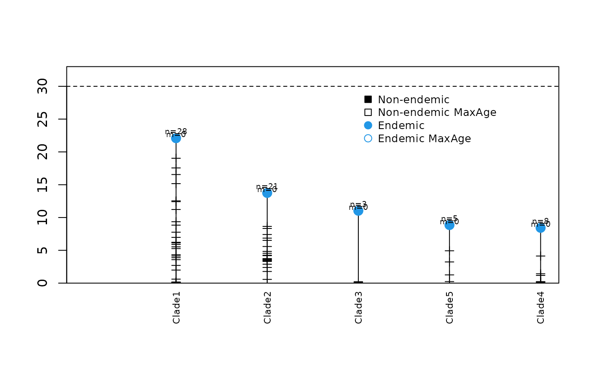
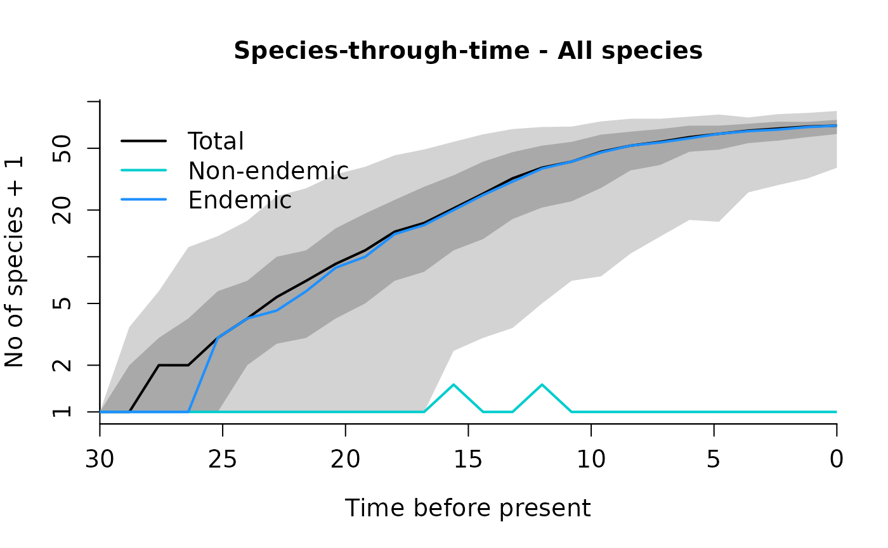

Demo: Fitting clade-specific and island-wide diversity-dependence models in DAISIE
22/04/2020
Source:vignettes/demo_CSvsIW.Rmd
demo_CSvsIW.RmdLoad required package DAISIE
1. Load, prepare and visualize data
- If you want to start directly with model fitting you can skip this step and go to step 2.
Load the phylogenetic data for Eleutherodacylus frogs from the island of Hispaniola (used in Etienne et al. 2020). This dataset contains times of colonization and branching times for all species of Eleutherodactylus frogs found on the island. The data was extracted from the dated molecular phylogeny of Dugo-Cota et al 2019 (Ecology Letters 22:884–893). The dataset includes 65 extant species, which are the result of five independent colonisation events of the island of Hispaniola.
data(frogs_datatable, package = "DAISIE")You can load your own data in a table/tibble format, making sure the table headers match the ones in the example.
| Clade_name | Status | Missing_species | Branching_times |
|---|---|---|---|
| Clade1 | Endemic | 0 | 22.090381975,19.03474267,17.558899475,16.551943175,15.163574647,12.539890494,12.418166302,11.224140324,9.356313022,8.838345923,7.763917546,6.976872428,6.225535797,6.128306647,5.891490086,5.534313767,5.268246402,4.325862315,4.130254551,3.876175449,3.576820015,2.700899509,1.988973569,0.609739668,0.16651871,0.149491685,0.138726728,0.038275342 |
| Clade2 | Endemic | 0 | 13.746625455,8.647464943,8.334079223,7.411910463,6.861782812,6.516839176,5.584497643,4.839004311,4.549481508,4.254369184,4.188654945,3.73901781,3.667503378,3.593658733,3.460220365,3.419754656,3.30938242,2.883634139,2.387378752,1.77824651,0.568917703 |
| Clade3 | Endemic | 0 | 11.032464497,0.224004413,0.102526748 |
| Clade4 | Endemic | 0 | 8.430721468,4.130831021,1.420117489,1.171228154,0.231664348,0.197599408,0.075831995,0.040222432 |
| Clade5 | Endemic | 0 | 8.852578907,4.93343221,3.230048172,1.259294338,0.235900375 |
The table contains the following 4 columns (column headers need to be written exactly like this):
-
Clade_name- Name of the clade/lineage on the island (e.g. clade code, genus name)
-
Status- Endemicity status of the clade. Can be the followingEndemic;Non_endemic;Endemic_MaxAge,Non_Endemic_MaxAgeThe latter two options are for cases when the time of colonisation is believed to be an overestimate. In these cases, DAISIE will assume colonisation happened any time between the colonisation time given inBranching_timesand the present, or between the colonisation time given inBranching_timesand the age of the first cladogenesis event in the lineage (if any). The MaxAge options can also be used when the colonization time is unknown, specifying “NA” in the columnBranching_times, in which case DAISIE will assume that colonisation happened any time between the age of the island and the present. -
Missing_species- Number of extant species that belong to the clade but are not included in the phylogeny. -
Branching_times- First element is the colonisation time, subsequent elements are branching times within the island if there are any. e.g. c(colonisation_time, branching_time1; branching_time2). If colonisation time is unknown, ‘NA’ can be specified. If branching times are unknown, do not replace them with ‘NA’ - just add the corresponding number of missing species to the columnMissing_species.
1.1. Create DAISIE datalist from the input table
In this case we are assuming an island age of 30 million years for Hispaniola and a mainland pool size of 300 species (this is the number of species that may colonize the island).
frogs_datalist <- DAISIE_dataprep(
datatable = frogs_datatable,
island_age = 30,
M = 300)1.2. View DAISIE datalist
Just type:
frogs_datalistThe DAISIE datalist includes the data from the table
frogs in the format of a DAISIE object that can be read in
the subsequent maximum likelihood functions (e.g DAISIE_ML,
DAISIE_ML_IW ). It includes the age of the island, the
number of mainland species that are not currently present on the island
and a list with all extant independent colonisation events, including
their colonization and branching times.
1.3. Visualise the data
DAISIE_plot_island(frogs_datalist)
This plot shows the different colonization events, their times of colonization and branching times (horizontal ticks). Dashed line shows the age of the island. n=number of species; m= number of species missing.
2. Fit DAISIE models
If you skipped step 1, first load the Hispaniola Eleutherodactylus datalist.
data(frogs_datalist)_
We will fit five different DAISIE models to the phylogenetic data
contained in frogs_datalist:
-
DI - diversity-independent model. Model where K’
(carrying-capacity) is set to
Inf. - CS - clade-specific diversity-dependence model.
- CS_no_ana - clade-specific diversity-dependence model with no anagenesis. Equivalent to the CS model in Etienne et al. 2020.
- IW - island-wide diversity-dependence model.
- IW_no_ana - island-wide diversity-dependence model with no anagenesis. Equivalent to the IW model in Etienne et al. 2020.
We use the DAISIE_ML and DAISIE_ML_IW
functions to optimise the likelihood. These are the most important
settings to specify in these functions:
-
datalist- The name of the DAISIE datalist (in this casefrogs_datalist) -
initparsopt- these are the initial values from the parameters for which the likelihood will be optimised. In the examples below we will use parameters similar to the maximum likelihood parameters from the corresponding models in Etienne et al 2020. However, we recommend you try a variety of initial starting parameters to ensure the optimum is found. Note that certain combinations of initial starting values may fail, as parameters must be feasible (e.g. a K’ value lower than the number of species found in the data will not run). In DAISIE the parameters have the following position:- Rate of cladogenesis (per species on the island per time unit)
- Rate of extinction (per species on the island per time unit)
- Carrying-capacity (K’) - maximum number of species any clade can reach on the island for CS models; maximum number of species on the island across all clades for IW models.
- Rate of colonisation (per species on the mainland per time unit)
- Rate of anagenesis (per species on the island per time unit)
-
idparsopt- The position of the parameters to optimise (e.g. to optimize cladogenesis and anagenesis only c(1,5). -
parsfix- If parameters are being fixed, specify here the value (e.g. if fixing K’ to Inf and fixing anagenesis to 0 - c(Inf,0). -
idparsfix- The position of the paratemers fixed (e.g. to fix K’ and anagenesis c(3,5)). -
ddmodel- Set 0 for diversity-independent models; 11 for diversity-dependent models (IW and CS) where cladogenesis and colonisation decline linearly with diversity. There are other options. - There are many other options, check
? DAISIE_ML
The IW models (IW and IW_no_ana) use the island-wide version of DAISIE, which is computationally demanding. They require high memory and long run times. We recommend these are run on a cluster. The CS models can be run on a regular computer or laptop.
2.1 Fit DI model
This model contains 4 parameters:
1 - cladogenesis
2 - extinction
4 - colonisation
5 - anagenesis
K’ is fixed to Inf
Set ddmodel=0
DAISIE_ML(
datalist = frogs_datalist,
initparsopt = c(0.18,0.03,0.0006,2),
idparsopt = c(1,2,4,5),
ddmodel = 0,
parsfix = Inf,
idparsfix = 3
)#> lambda_c mu K gamma lambda_a loglik df conv
#> 1 0.1789218 0.02509053 Inf 0.0006259365 1568.88 -209.8634 4 0
2.2 Fit CS model
This model contains 5 parameters:
1 - cladogenesis
2 - extinction
3 - K’
4 - colonisation
5 - anagenesis
Set ddmodel=11
DAISIE_ML(
datalist = frogs_datalist,
initparsopt = c(0.44,0.11,36.44,0.0007,2),
idparsopt = c(1,2,3,4,5),
ddmodel = 11,
parsfix = NULL,
idparsfix = NULL
)Output not shown here.
2.3 Fit CS_no_ana model
This model contains 4 parameters:
1 - cladogenesis
2 - extinction
3 - K’
4 - colonisation
Set ddmodel=11
DAISIE_ML(
datalist = frogs_datalist,
initparsopt = c(0.44,0.11,36.44,0.0007),
idparsopt = c(1,2,3,4),
ddmodel = 11,
parsfix = 0,
idparsfix = 5
)Output not shown here.
2.4 Fit IW model
This model contains 5 parameters:
1 - cladogenesis
2 - extinction
3 - K’
4 - colonisation
5 - anagenesis
Set ddmodel=11
DAISIE_ML_IW(
datalist = frogs_datalist,
initparsopt = c(0.41, 0.17, 131.7, 0.0012, 2),
idparsopt = c(1,2,3,4,5),
ddmodel = 11,
parsfix = NULL,
idparsfix = NULL
)Output not shown here (recommended to be run on a cluster).
2.5 Fit IW_no_ana model
This model contains 4 parameters:
1 - cladogenesis
2 - extinction
3 - K’
4 - colonisation
Set ddmodel=11
DAISIE_ML_IW(
datalist = frogs_datalist,
initparsopt = c(0.40, 0.17, 131.83, 0.0012),
idparsopt = c(1,2,3,4),
ddmodel = 11,
parsfix = 0,
idparsfix = 5
)Output not shown here (recommended to be run on a cluster).
3. Simulate islands under given DAISIE models
3.1 Simulate islands with the parameters estimated from the best model for the Hispaniolan Eleutherodacytlus data
We use the DAISIE_sim function, which simulates
diversity dynamics on an island from island birth until a specificied
island age, based on a given set of parameters (cladogenesis,
extinction, carrying-capacity (K’), colonisation, anagenesis). These are
the most important settings to specify in DAISIE_sim
function:
-
pars- The values of the 5 parameters in the following order- Rate of cladogenesis
- Rate of extinction
- Carrying-capacity (K’)
- Rate of colonisation
- Rate of anagenesis
-
replicates- Number of replicates to simulate -
time- Time to run the simulation, for example 20 million years -
M- Number species in the mainland pool -
divdepmodel- setCSfor clade-specific diversity-dependence; orIWfor island-wide diversity-dependence
Simulate a CS model for 30 million years, 100 replicates:
set.seed(1)
frog_sims_CS <- DAISIE_sim_cr(
time=30,
M=300,
pars=c(0.44,0.11,36.44,0.0007,0),
divdepmodel = "CS",
replicates= 100,
plot_sims = FALSE)
#> Island replicate 1
#> Island replicate 2
#> Island replicate 3
#> Island replicate 4
#> Island replicate 5
#> Island replicate 6
#> Island replicate 7
#> Island replicate 8
#> Island replicate 9
#> Island replicate 10
#> Island replicate 11
#> Island replicate 12
#> Island replicate 13
#> Island replicate 14
#> Island replicate 15
#> Island replicate 16
#> Island replicate 17
#> Island replicate 18
#> Island replicate 19
#> Island replicate 20
#> Island replicate 21
#> Island replicate 22
#> Island replicate 23
#> Island replicate 24
#> Island replicate 25
#> Island replicate 26
#> Island replicate 27
#> Island replicate 28
#> Island replicate 29
#> Island replicate 30
#> Island replicate 31
#> Island replicate 32
#> Island replicate 33
#> Island replicate 34
#> Island replicate 35
#> Island replicate 36
#> Island replicate 37
#> Island replicate 38
#> Island replicate 39
#> Island replicate 40
#> Island replicate 41
#> Island replicate 42
#> Island replicate 43
#> Island replicate 44
#> Island replicate 45
#> Island replicate 46
#> Island replicate 47
#> Island replicate 48
#> Island replicate 49
#> Island replicate 50
#> Island replicate 51
#> Island replicate 52
#> Island replicate 53
#> Island replicate 54
#> Island replicate 55
#> Island replicate 56
#> Island replicate 57
#> Island replicate 58
#> Island replicate 59
#> Island replicate 60
#> Island replicate 61
#> Island replicate 62
#> Island replicate 63
#> Island replicate 64
#> Island replicate 65
#> Island replicate 66
#> Island replicate 67
#> Island replicate 68
#> Island replicate 69
#> Island replicate 70
#> Island replicate 71
#> Island replicate 72
#> Island replicate 73
#> Island replicate 74
#> Island replicate 75
#> Island replicate 76
#> Island replicate 77
#> Island replicate 78
#> Island replicate 79
#> Island replicate 80
#> Island replicate 81
#> Island replicate 82
#> Island replicate 83
#> Island replicate 84
#> Island replicate 85
#> Island replicate 86
#> Island replicate 87
#> Island replicate 88
#> Island replicate 89
#> Island replicate 90
#> Island replicate 91
#> Island replicate 92
#> Island replicate 93
#> Island replicate 94
#> Island replicate 95
#> Island replicate 96
#> Island replicate 97
#> Island replicate 98
#> Island replicate 99
#> Island replicate 100
#> Island being formatted: 1/100
#> Island being formatted: 2/100
#> Island being formatted: 3/100
#> Island being formatted: 4/100
#> Island being formatted: 5/100
#> Island being formatted: 6/100
#> Island being formatted: 7/100
#> Island being formatted: 8/100
#> Island being formatted: 9/100
#> Island being formatted: 10/100
#> Island being formatted: 11/100
#> Island being formatted: 12/100
#> Island being formatted: 13/100
#> Island being formatted: 14/100
#> Island being formatted: 15/100
#> Island being formatted: 16/100
#> Island being formatted: 17/100
#> Island being formatted: 18/100
#> Island being formatted: 19/100
#> Island being formatted: 20/100
#> Island being formatted: 21/100
#> Island being formatted: 22/100
#> Island being formatted: 23/100
#> Island being formatted: 24/100
#> Island being formatted: 25/100
#> Island being formatted: 26/100
#> Island being formatted: 27/100
#> Island being formatted: 28/100
#> Island being formatted: 29/100
#> Island being formatted: 30/100
#> Island being formatted: 31/100
#> Island being formatted: 32/100
#> Island being formatted: 33/100
#> Island being formatted: 34/100
#> Island being formatted: 35/100
#> Island being formatted: 36/100
#> Island being formatted: 37/100
#> Island being formatted: 38/100
#> Island being formatted: 39/100
#> Island being formatted: 40/100
#> Island being formatted: 41/100
#> Island being formatted: 42/100
#> Island being formatted: 43/100
#> Island being formatted: 44/100
#> Island being formatted: 45/100
#> Island being formatted: 46/100
#> Island being formatted: 47/100
#> Island being formatted: 48/100
#> Island being formatted: 49/100
#> Island being formatted: 50/100
#> Island being formatted: 51/100
#> Island being formatted: 52/100
#> Island being formatted: 53/100
#> Island being formatted: 54/100
#> Island being formatted: 55/100
#> Island being formatted: 56/100
#> Island being formatted: 57/100
#> Island being formatted: 58/100
#> Island being formatted: 59/100
#> Island being formatted: 60/100
#> Island being formatted: 61/100
#> Island being formatted: 62/100
#> Island being formatted: 63/100
#> Island being formatted: 64/100
#> Island being formatted: 65/100
#> Island being formatted: 66/100
#> Island being formatted: 67/100
#> Island being formatted: 68/100
#> Island being formatted: 69/100
#> Island being formatted: 70/100
#> Island being formatted: 71/100
#> Island being formatted: 72/100
#> Island being formatted: 73/100
#> Island being formatted: 74/100
#> Island being formatted: 75/100
#> Island being formatted: 76/100
#> Island being formatted: 77/100
#> Island being formatted: 78/100
#> Island being formatted: 79/100
#> Island being formatted: 80/100
#> Island being formatted: 81/100
#> Island being formatted: 82/100
#> Island being formatted: 83/100
#> Island being formatted: 84/100
#> Island being formatted: 85/100
#> Island being formatted: 86/100
#> Island being formatted: 87/100
#> Island being formatted: 88/100
#> Island being formatted: 89/100
#> Island being formatted: 90/100
#> Island being formatted: 91/100
#> Island being formatted: 92/100
#> Island being formatted: 93/100
#> Island being formatted: 94/100
#> Island being formatted: 95/100
#> Island being formatted: 96/100
#> Island being formatted: 97/100
#> Island being formatted: 98/100
#> Island being formatted: 99/100
#> Island being formatted: 100/100Simulate an IW model for 30 million years, 100 replicates:
set.seed(1)
frog_sims_CS <- DAISIE_sim_cr(
time=30,
M=300,
pars=c(0.40,0.17,131.83,0.0012,0),
divdepmodel = "IW",
replicates= 100,
plot_sims = FALSE)
#> Island replicate 1
#> Island replicate 2
#> Island replicate 3
#> Island replicate 4
#> Island replicate 5
#> Island replicate 6
#> Island replicate 7
#> Island replicate 8
#> Island replicate 9
#> Island replicate 10
#> Island replicate 11
#> Island replicate 12
#> Island replicate 13
#> Island replicate 14
#> Island replicate 15
#> Island replicate 16
#> Island replicate 17
#> Island replicate 18
#> Island replicate 19
#> Island replicate 20
#> Island replicate 21
#> Island replicate 22
#> Island replicate 23
#> Island replicate 24
#> Island replicate 25
#> Island replicate 26
#> Island replicate 27
#> Island replicate 28
#> Island replicate 29
#> Island replicate 30
#> Island replicate 31
#> Island replicate 32
#> Island replicate 33
#> Island replicate 34
#> Island replicate 35
#> Island replicate 36
#> Island replicate 37
#> Island replicate 38
#> Island replicate 39
#> Island replicate 40
#> Island replicate 41
#> Island replicate 42
#> Island replicate 43
#> Island replicate 44
#> Island replicate 45
#> Island replicate 46
#> Island replicate 47
#> Island replicate 48
#> Island replicate 49
#> Island replicate 50
#> Island replicate 51
#> Island replicate 52
#> Island replicate 53
#> Island replicate 54
#> Island replicate 55
#> Island replicate 56
#> Island replicate 57
#> Island replicate 58
#> Island replicate 59
#> Island replicate 60
#> Island replicate 61
#> Island replicate 62
#> Island replicate 63
#> Island replicate 64
#> Island replicate 65
#> Island replicate 66
#> Island replicate 67
#> Island replicate 68
#> Island replicate 69
#> Island replicate 70
#> Island replicate 71
#> Island replicate 72
#> Island replicate 73
#> Island replicate 74
#> Island replicate 75
#> Island replicate 76
#> Island replicate 77
#> Island replicate 78
#> Island replicate 79
#> Island replicate 80
#> Island replicate 81
#> Island replicate 82
#> Island replicate 83
#> Island replicate 84
#> Island replicate 85
#> Island replicate 86
#> Island replicate 87
#> Island replicate 88
#> Island replicate 89
#> Island replicate 90
#> Island replicate 91
#> Island replicate 92
#> Island replicate 93
#> Island replicate 94
#> Island replicate 95
#> Island replicate 96
#> Island replicate 97
#> Island replicate 98
#> Island replicate 99
#> Island replicate 100
#> Island being formatted: 1/100
#> Island being formatted: 2/100
#> Island being formatted: 3/100
#> Island being formatted: 4/100
#> Island being formatted: 5/100
#> Island being formatted: 6/100
#> Island being formatted: 7/100
#> Island being formatted: 8/100
#> Island being formatted: 9/100
#> Island being formatted: 10/100
#> Island being formatted: 11/100
#> Island being formatted: 12/100
#> Island being formatted: 13/100
#> Island being formatted: 14/100
#> Island being formatted: 15/100
#> Island being formatted: 16/100
#> Island being formatted: 17/100
#> Island being formatted: 18/100
#> Island being formatted: 19/100
#> Island being formatted: 20/100
#> Island being formatted: 21/100
#> Island being formatted: 22/100
#> Island being formatted: 23/100
#> Island being formatted: 24/100
#> Island being formatted: 25/100
#> Island being formatted: 26/100
#> Island being formatted: 27/100
#> Island being formatted: 28/100
#> Island being formatted: 29/100
#> Island being formatted: 30/100
#> Island being formatted: 31/100
#> Island being formatted: 32/100
#> Island being formatted: 33/100
#> Island being formatted: 34/100
#> Island being formatted: 35/100
#> Island being formatted: 36/100
#> Island being formatted: 37/100
#> Island being formatted: 38/100
#> Island being formatted: 39/100
#> Island being formatted: 40/100
#> Island being formatted: 41/100
#> Island being formatted: 42/100
#> Island being formatted: 43/100
#> Island being formatted: 44/100
#> Island being formatted: 45/100
#> Island being formatted: 46/100
#> Island being formatted: 47/100
#> Island being formatted: 48/100
#> Island being formatted: 49/100
#> Island being formatted: 50/100
#> Island being formatted: 51/100
#> Island being formatted: 52/100
#> Island being formatted: 53/100
#> Island being formatted: 54/100
#> Island being formatted: 55/100
#> Island being formatted: 56/100
#> Island being formatted: 57/100
#> Island being formatted: 58/100
#> Island being formatted: 59/100
#> Island being formatted: 60/100
#> Island being formatted: 61/100
#> Island being formatted: 62/100
#> Island being formatted: 63/100
#> Island being formatted: 64/100
#> Island being formatted: 65/100
#> Island being formatted: 66/100
#> Island being formatted: 67/100
#> Island being formatted: 68/100
#> Island being formatted: 69/100
#> Island being formatted: 70/100
#> Island being formatted: 71/100
#> Island being formatted: 72/100
#> Island being formatted: 73/100
#> Island being formatted: 74/100
#> Island being formatted: 75/100
#> Island being formatted: 76/100
#> Island being formatted: 77/100
#> Island being formatted: 78/100
#> Island being formatted: 79/100
#> Island being formatted: 80/100
#> Island being formatted: 81/100
#> Island being formatted: 82/100
#> Island being formatted: 83/100
#> Island being formatted: 84/100
#> Island being formatted: 85/100
#> Island being formatted: 86/100
#> Island being formatted: 87/100
#> Island being formatted: 88/100
#> Island being formatted: 89/100
#> Island being formatted: 90/100
#> Island being formatted: 91/100
#> Island being formatted: 92/100
#> Island being formatted: 93/100
#> Island being formatted: 94/100
#> Island being formatted: 95/100
#> Island being formatted: 96/100
#> Island being formatted: 97/100
#> Island being formatted: 98/100
#> Island being formatted: 99/100
#> Island being formatted: 100/100
3.2 Plot the species-through-time plots resulting from the simulations.
DAISIE_plot_sims(frog_sims_CS)